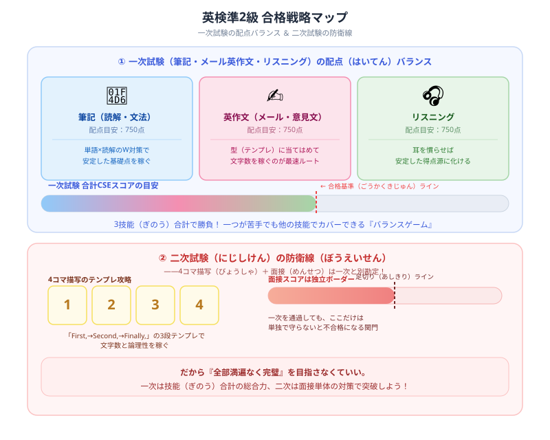

英検準2級の勉強法・合格スケジュール【2026年版】
『高校英語のスタートダッシュとして英検準2級を取ろう！』と決意して、いざテキストを開いた瞬間……「うわっ、なんじゃこりゃ、3級のときより単語が一気に難しくなってるし、自分で50語も英語を書く英作文なんて頭パンクするわ！」とフリーズしていませんか？（笑）
毎日重い法律や数字の猛勉強と格闘している僕の視点から、この高校レベルの最初の壁をゲーム感覚でサクッと切り崩し、確実に合格をもぎ取るための【テンプレートハック・独学逆算スケジュール】を優しくナビゲートします！最後まで読んだら、末尾の【いいねボタン】もポチッと押してもらえると嬉しいです。
英検準2級の基本情報

英検準2級は高校在学程度（高1〜2レベル）のCEFR A2〜B1で、英語4技能のバランスよく使える力を問う試験です。3級との最大の違いは英作文の本格化と二次試験の難易度上昇です。
| 項目 | 内容 |
|---|---|
| 対象レベル | 高校在学程度（高1〜高2レベル） |
| 一次試験内容 | 筆記（80分）＋リスニング（約25分） |
| 二次試験内容 | 個人面接（約6分） |
| 合格率 | 約35〜40% |
| 活用場面 | 大学入試優遇（一部）、履歴書記載可能な最低ライン |
必要な勉強時間
| 出発点 | 目安勉強時間 |
|---|---|
| 英検3級取得済み | 100〜150時間 |
| 英語が苦手（基礎から） | 200〜300時間 |
1日1時間の学習ペースなら、3級取得済みの方で3〜5ヶ月が目安です。毎日継続することが最大のポイントです。
一次試験のパート別攻略
語彙・文法問題（大問1）20問
3級と比べて抽象的な単語が増加します。前置詞・接続詞・熟語も頻出で、文脈から意味を推測する力も求められます。単語帳は「でる順パス単 準2級（旺文社）」を1周することが最短ルートです。毎日20〜25語ずつコツコツ覚えましょう。
長文読解（大問2・3・4）
掲示・Eメール・説明文の3種類の英文が出題されます。設問文を先に読む「先読み法」が効果的で、何を問われているかを把握してから本文を読むと時間のロスを防げます。段落ごとの要旨を掴む練習を積み重ねましょう。
英作文（大問5）
自分の意見と2つの理由を50〜60語程度で述べる意見論述問題です。以下のテンプレートを丸ごと覚えておくと本番でスムーズに書けます。
採点は「内容・構成・語彙・文法」の4観点です。完璧な英語より、論理的な構成を意識しましょう。
リスニング
会話・説明文を聞いて内容を理解する問題です。3級より話すスピードが上がるため、耳慣らしが重要です。ディクテーション（聞こえた英語をそのまま書き取る）練習が効果的で、聞き取れない箇所を明確にして集中的に対策できます。
二次試験（面接）の対策
準2級からスピーキングの要求レベルが上がります。面接の流れと対策ポイントを押さえましょう。
- パッセージ音読：約60語の英文を声に出して読む。発音より流暢さを意識して止まらず読み切る
- 4コマ漫画の説明：音読後、4コマ漫画の内容を英語で説明する。「First, ... Second, ... Finally, ...」のテンプレートで話す
- 意見問題（3問）：自分の意見を問われる。「I agree/disagree because ...」のテンプレートを練習しておくと安定した回答ができる
学習スケジュール（4ヶ月プラン）
| 時期 | 学習内容 | 1日の目安 |
|---|---|---|
| 1ヶ月目 | 単語70語/週、文法テキスト1周 | 1時間 |
| 2ヶ月目 | 長文読解開始、リスニング毎日15分 | 1〜1.5時間 |
| 3ヶ月目 | 過去問2〜3回分、英作文テンプレート習得 | 1.5時間 |
| 4ヶ月目 | 過去問5回分＋面接練習 | 1.5〜2時間 |
準2級合格後のステップアップ
準2級合格後は、次のステージとして英検2級を目指しましょう。2級は大学入試・就職活動で評価される最重要レベルで、より多くの大学で優遇を受けられます。準2級で身につけた単語・文法力を土台に、語彙数を約3,500語から約5,000語へ引き上げることが次の目標です。
まとめ
- 英検準2級は3級取得済みなら100〜150時間、1日1時間で3〜5ヶ月が目安
- 語彙は「でる順パス単 準2級」1冊を完璧にするのが最短ルート
- 英作文は「I think + 理由2つ + まとめ」の4段落テンプレートで攻略する
- 二次試験（面接）は「I agree/disagree because ...」のテンプレートを練習しておく
- 合格後は英検2級へのステップアップで大学入試・就職活動の武器になる
もしこの記事が少しでも力になったら、僕の執筆モチベーション維持のために、ぜひ下の【いいねボタン】をポチッと押していってくださいね。いつも本当にありがとうございます！